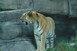

Passion Tigre
Je suis passioné par les tigres depuis très longtemps. Ce site a été construit en hommage à ces merveilleux félins...
Je fais partie de la SAT qui a pour but de faire connaître ces splendides animaux.
Voici ce qu'en dit Wikipédia:
Le Tigre (Panthera tigris) est un mammifère carnivore de la famille des félidés (Felidae) du genre Panthera. Aisément reconnaissable à sa fourrure rousse rayée de noir, il est le plus grand félin sauvage et l'un des plus grands carnivores du monde. L'espèce est divisée en neuf sous-espèces possédant des différences mineures en termes de taille ou de comportement. Superprédateur, il chasse principalement les cerfs et les sangliers, bien qu'il puisse s'attaquer à des proies de taille plus importante comme les buffles. Jusqu'au XIXe siècle, le Tigre était réputé mangeur d'homme. La structure sociale des tigres en fait un animal solitaire ; le mâle possède un territoire qui englobe les domaines de plusieurs femelles et ne participe pas à l'éducation des petits. Wikipédia





Voici les sous-espèces de tigres:
- Tigre de Sibérie
- Tigre de Chine méridionale
- Tigre de Bali
- Tigre d'Indochine
- Tigre de Malaisie
- Tigre de Java
- Tigre de Sumatra
- Tigre de Bengal
- Tigre de la Caspienne

| Lieu | Menace |
|---|---|
| Grand Mekong | Demande croissante de certaines parties de l’animal pour la médecine chinoise traditionnelle et fragmentation des habitats du fait du développement non durable d’infrastructures |
| Île de Sumatra | Production d’huile de palme et de pâtes à papiers |
| Indonésie et Malaisie | Pâte à papier, l’huile de palme et le caoutchouc |
| États-Unis | Les tigres captifs représentent un danger pour les tigres sauvages |
| Europe | Gros appétit pour l’huile de palme |
| Népal | Commerce illégal de produits dérivés de tigres |
Vous pouvez me contacter à cette adresse :
Tigrou AlfredAllée des fauves
28645 Félins-sur-Loire